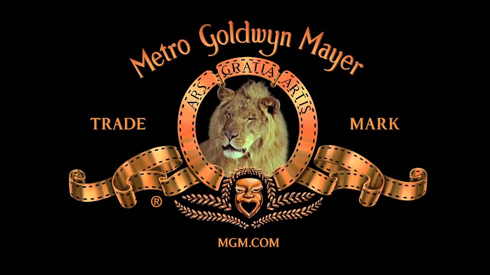

Since 1916 (MGM), and through the time the studio was formed by the merger of Samuel Goldwyn's studio with Marcus Loew's Metro Pictures and Louis B. Mayer's company in 1924 there have been seven different lions used for the MGM logo. Although MGM has referred to all of the lions used in their trademark as "Leo the Lion", only the current lion, in use since 1957 (a total of 63 years), was actually named "Leo".
 Visit our website